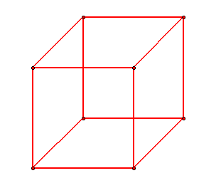
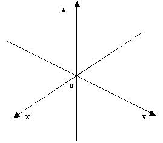

Introdução a conceitos
O que você acha que a figura em vermelho representa? Anote a sua resposta abaixo:
Você disse cubo? Pois bem, muitas vezes não percebemos que damos mais significado a uma figura do que ela apresenta. Este na verdade é um desenho em duas dimensões, feito através de segmentos de retas, como vemos abaixo:

Quando giramos a imagem, percebemos ele está representado apenas em duas dimensões. Você também perceberia isso se representasse um cubo no papel, virando a folha.
Para representar 3 dimensões (altura, largura, comprimento), utilizamos 3 eixos no plano cartesiano:
Como você imagina a representação de um cubo nos 3 eixos do plano cartesiano?